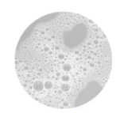
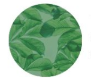
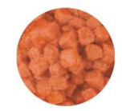
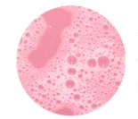
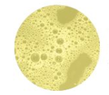
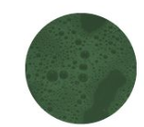
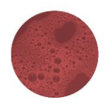
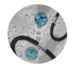

| 고양이 토색깔 |
대처 법 |
|  |
위험도가 낮으며, 투명한 토는
물 또는 위액이 역류한 것이라서
한번 정도 토하는 것은 문제가 되지
않습니다. 거품은 투명한 토가
역류할때 공기를 삼켜서 검품이 된 것이라서
큰 문제가 없습니다.
|
|  |
잎사귀를 토한다고 하는데,
이것은 집 안에서 키우는 고양이라면
흔하게 볼 수 있는 토는 아닙니다.
그리고 고양이풀을 먹고 토하지는 않고
고양이풀은 정말 고양이 헤어볼을 위해
먹는 것이고, 고양이들이 토할 만큼
많이 먹지도 않기 때문에 걱정할 필요는
없습니다. 혹시나 토한다고 해도 평소와
움직임이 같다면 걱정하지 않으셔도 됩니다.
|
|  |
급하게 먹어서 소화가 안됐을때
나타나는 증상입니다.
|
|  |
분홍색은 약간의 출혈을 의미하는데
입안, 식도, 위장등에 상처가 있어
출혈이 있어서 그럴 가능성이 높습니다.
그래서 토한 사진을 찍고 소량 채취를 하여
병원에 가보시는것을 추천드립니다.
|
|  |
사료와 비슷한 색깔같으면서
조금 더 옅은 노란빛 나는 토를
할 때가 있습니다. 이것은 공복일 경우에
그렇다고 합니다. 토를 하고 난 후 평소와 같이
움직이고 놀고 밥도 물도 잘 먹는다면
괜찮겠지만 이틀이상 자주 토한다면
병원에 가보시기 바랍니다.
|
 |
짙은 갈색 토는 만성 위 출혈,
소장 또는 대장에 출혈이나 질환이
있을때 일어납니다.
병원에 바로 가시기 바랍니다.
|
|  |
이물질을 먹었거나
췌장에 문제가 있을때 하는
구토 색입니다. 췌장염, 췌장기능부전,
종양 등 이러한 이유로 하는 것이라
빠른 치료가 필요합니다.
|
|

|
옅은 분홍빛의 토가 반복이 되고
심각해지면 빨간색의 토를 하는 것입니다.
생명이 위험하므로 빠른 진단과
치료가 필요합니다.
|
|

|
방바닥에 돌아다니는 비닐이나
작은 뚜껑, 고무, 종이 쪼가리 등
고양이들은 방바닥에 굴러다니면
일단 입으로 한번 물기도 하고 먹을 수도
있습니다. 단단한 이물질을 토하면서
위나 식도에 상처입힐 수 있으니
병원에 가서 치료받으시기 바랍니다.
|